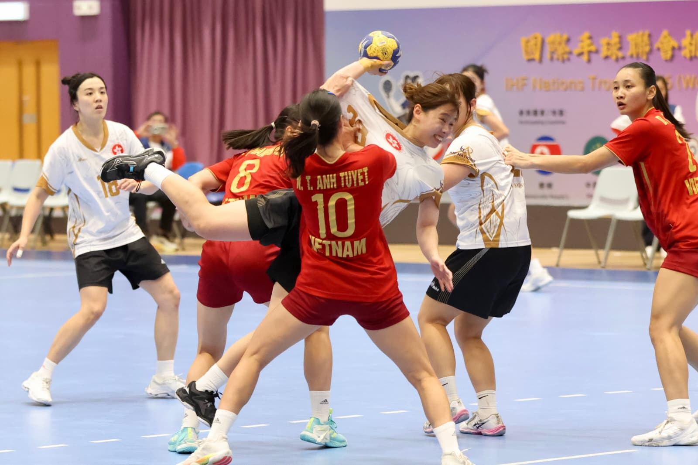

handball2026-10-17 21:15 · 中國香港手球總會
港女手23:21再贏越南晉級挑戰盃決賽 鄔梨鈴狂轟13球 明午撼朝鮮爭冠
香港女子手球隊今晚喺馬鞍山體育館上演嘅IHF挑戰盃四強戰，以23:21擊敗越南，繼名古屋亞運後再度戰勝同一對手，聽日（18日）下晝3點半決賽同朝鮮爭冠軍。主將鄔梨鈴個人狂轟13球，連續兩場對越南都係全場入球最多，近700名主場球迷見證港隊晉級。
港越雙方開局防守嚴密，比分拉鋸；落後一球嘅港隊連取3分反超9:7，9平時鄔梨鈴禁區外跳射個人第5球，10:9振奮全場，半場港隊14:13領先一球。下半場港隊多次封殺越南射門，盧紀嵐、孔倩瑜、張鎧恩各入兩球，一度拉開到21:16；越南追近至20:22時，越南球員Hoang T侵犯盧紀嵐被紅牌驅逐，港隊最終以23:21鎖定勝局。
鄔梨鈴賽後表示，好開心兩度喺越南身上取得個人單場最高入球，期望聽日決賽喺球迷支持下擊敗朝鮮。另一場四強，朝鮮以30:19大勝中華台北，門將CHOE O G當選MVP；排名賽澳門以24:18擊敗蒙古得第五，杜佩潔入7球膺MVP。聽日下晝1點先上演越南對中華台北嘅季軍戰，3點半就係香港對朝鮮嘅決賽，馬鞍山體育館免費入場。
📍 馬鞍山體育館 · 免費入場
分享到 Facebook